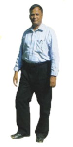

- Home
- About Us
- Activities
- Gallery
- Contact us
About Us
|
Roever Educational and Social Developmental Institutions, Perambalur, Tamil Nadu India run by St.John Sangam
Trust, has over 35 years of service in managing educational, social and charitable institutions, with a total
of 37 institutions in and around Perambalur. HRKVK Hans Roever Krishi Vigyan Kendra is one such research institution run by St.John Sangam Trust. |
 | |||||||||||||||||||||||||||||||||||||||||||||||||||||||||||||||||||||||||||||||||||||||||||||||||||||||||||||||||||
| Hans Roever Krishi Vigyan Kendra - Perambalur, India. | ||||||||||||||||||||||||||||||||||||||||||||||||||||||||||||||||||||||||||||||||||||||||||||||||||||||||||||||||||||
|
Hans Roever Krishi Vigyan Kendra is sanctioned and funded by Indian Council of Agricultural Research (ICAR),
Govt. of India, New Delhi and managed by St. John Sangam Trust, Perambalur. |
||||||||||||||||||||||||||||||||||||||||||||||||||||||||||||||||||||||||||||||||||||||||||||||||||||||||||||||||||||
|
Infrastructure and Buildings |
||||||||||||||||||||||||||||||||||||||||||||||||||||||||||||||||||||||||||||||||||||||||||||||||||||||||||||||||||||
|